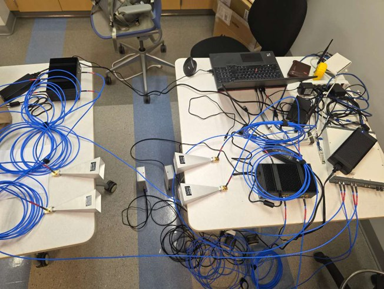

A
Near-field communications & sensing
Low-overhead beam acquisition, refinement, and tracking for large apertures under spherical-wave propagation.
- DFT and Fresnel codebooks
- Amplitude-only measurements
- Beam-pattern analysis
Wireless communications · Reinforcement learning · Hardware prototyping
王梓骏
Ph.D. student in Electrical Engineering at the University at Buffalo
I develop model-driven and learning-assisted signal processing methods for near-field communications and sensing, with applications to beam training and tracking, sparse array design, and mmWave prototyping.
I received my B.Eng. in Telecommunications Engineering from Nanjing University in 2024. I am now pursuing the Ph.D. degree at UB, advised by Prof. Rui Zhang.
01 / News
Selected publication and open-source milestones.
Adaptive Payload-Aided Near-Field Beam Tracking via Thompson Sampling is now available on arXiv and indexed by Google Scholar.
Efficient Near Field Beam Tracking via Thompson Sampling is now available on arXiv and indexed by Google Scholar.
New articles appeared in IEEE Transactions on Wireless Communications and IEEE Wireless Communications Letters.
Two near-field beam-training papers were published at IEEE GLOBECOM 2025, with complete research code released on GitHub.
02 / Research
Physics-aware algorithms that connect propagation models, inference, control, and real RF hardware.
A
Low-overhead beam acquisition, refinement, and tracking for large apertures under spherical-wave propagation.
B
Structured recovery methods that exploit spatial sparsity and codebook geometry for efficient channel acquisition.
C
Queue-aware decision making that jointly manages beam alignment, scheduling, and delay-sensitive traffic.
D
End-to-end 28 GHz prototyping spanning waveform generation, synchronized capture, beam control, and evaluation.
03 / Publications
NeurIPS 2025 AI4NextG Workshop · OpenReview
arXiv:2603.07477
04 / Projects
Python · Jupyter · IEEE TWC / GLOBECOM
Shared implementation for coarse acquisition, iterative refinement, simulated annealing / Adam MLE, baselines, CRB evaluation, and paper figures.
View repository 02Python · Jupyter · IEEE GLOBECOM
DFT and near-field codebooks, multi-beam measurements, LASSO reconstruction, off-grid refinement, baselines, and the complete figure pipeline.
View repository 03Python · Jupyter · NeurIPS AI4NextG
Near-field UPA channels, queue-aware PPO, DFT / near-field / full-CSI baselines, ablations, trained checkpoints, and publication figures.
View repository 0428 GHz communication & sensing platform
Experience integrating a USRP X410, UHD 4.8, TMYTEK 8×8 phased arrays, YTTEK frequency converters, horn antennas, and laboratory instrumentation.
View example repository